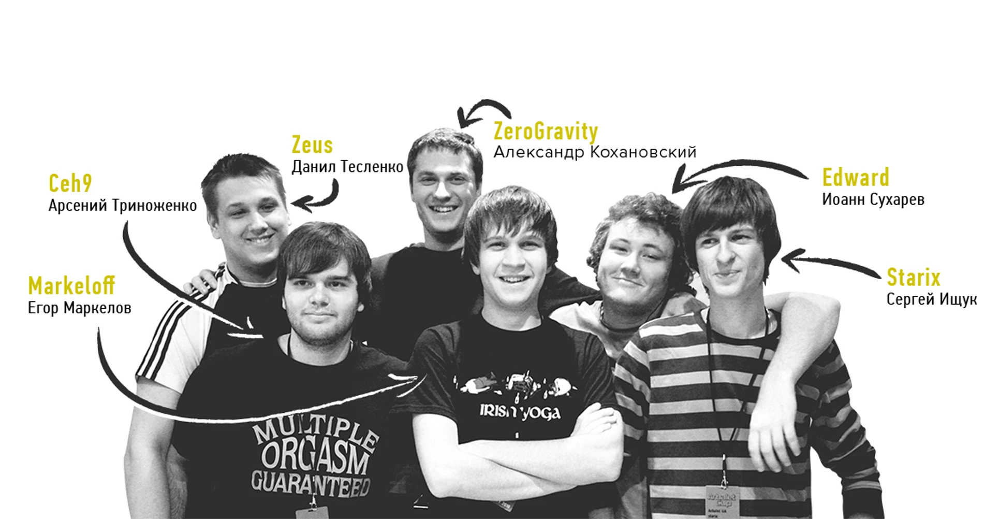
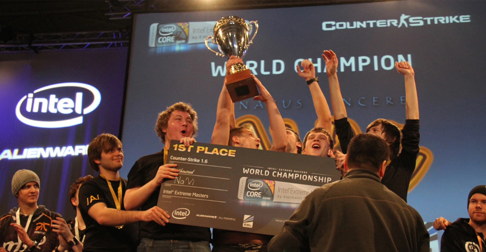
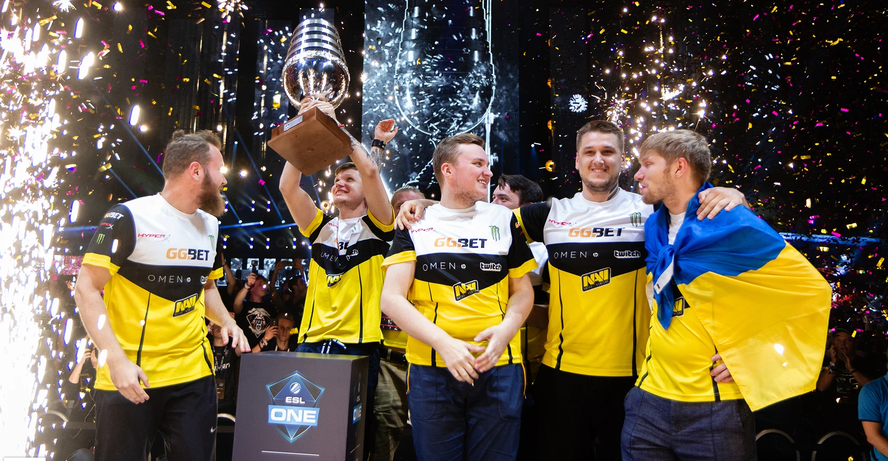

2009
In October 2009, when esports was rapidly gaining popularity and the number of championships with large prizes was steadily increasing, a philanthropist from Kazakhstan, Murat "Arbalet" Zhumashevich, announced the idea of creating an esports organization at the Intel Extreme Masters tournament in Dubai. Arbalet set a goal to establish a professional team for which he would become the main sponsor: he would provide players with a training ground and take care of financial issues, from salaries to flights. Starix was the first to respond to the offer, and it was this famous Counter-Strike player who was tasked with forming the Star Five. On December 17, 2009, the construction of the eSports organization Natus Vincere (Latin for "born to win") began around the Counter-Strike team. Initially, the name NAVI was borrowed from the movie Avatar, and it took its final form after a contest for the best decoding of the abbreviation held among fans. The first NAVI roster included Edward, markeloff, starix, ceh9, and Zeus, and ZeroGravity became the manager. All players stood out for their high individual skills and had extensive experience in tournament play.
2010
In 2010, NAVI won 12 medals, 8 of which were gold, and gained a whole army of fans. The players' successes were recognized by hltv.org: Edward (fifth place), starix (fourth place), and markeloff were recognized as the strongest player of the season in the annual ranking. Zeus, in turn, was named the best captain. In October 2010, the NAVI organization became a multi-gaming organization by creating a Dota team. It is interesting that initially, Goblak and Mag were among the five players, but it did not last long. The NAVI. Dota team was formed at the beginning of 2011 with players Dendi, XBOCT, LighTofHeaveN, ArtStyle, and Puppey.
2011
In 2011, the club founded FIFA, StarCraft II, and League of Legends teams. The new units did not live up to expectations and were subsequently disbanded. The only exception was Yozhyk, one of the world's strongest FIFA players, who delighted fans with victories as part of NAVI for a long time. He has more than 20 medals from competitions of various ranks. The main esports event of 2011 was The International, a Dota 2 tournament with a record-breaking prize pool of $1,000,000. It is worth noting that this Valve game was presented to a wide audience for the first time at the gamescom exhibition in Cologne. At the end of the Dota Allstars era, the NAVI team was one of the best, so it was only natural to receive an invitation to The International. In Cologne, Born to Win made a real sensation: they easily overcame the group stage and continued their victorious march in the playoffs, where they confidently beat EHOME, the favorite in this tournament, in the grand final. The success of the organization did not go unnoticed: XBOCT, Dendi, Puppey, ArtStyle, and LighTofHeaveN became the idols of millions and forever inscribed their names in the history of esports.
2012
This year turned out to be very important primarily for the CS squad. The team still demonstrated a high-class game, won several times at major tournaments, and became a silver medalist. However, the transition to a new discipline was inevitable: by the end of 2012, the full NAVI team started playing Counter-Strike: Global Offensive. The Dota lineup continued to delight fans. In 2012, Natus Vincere managed to reach the finals of six major tournaments and become champions twice! Also, Born to Win reached the finals of The International for the second time in a row, but this time they failed to beat another Chinese team - Invictus Gaming. However, this did not affect further results: NAVI players remained among the best on the professional scene. An important step was the appearance of NAVI in another MOBA, League of Legends. The club signed an agreement with a promising European team. It fought in a number of championships, but by the end of the year, it ceased to exist.

2013
Subsequently, Born to Win returned to The International many times. The most dramatic was the fight between NAVI and the Swedish five-man Alliance in 2013, which is called one of the most exciting matches in Dota 2. Counter-Strike players also held the bar. In June 2013, the NAVI squad in World of Tanks was formed from the players of The RED Rush. The tankers won their first cup in September, winning the championship in Seattle. Over the next four years, the Natus Vincere tank squad won more than 20 international awards and $350,000 in tournaments in China, Poland, the United States, and other countries. Unfortunately, in June 2017, Natus Vincere and World of Tanks parted ways due to the rapid decline of the eSports component of the discipline.

2014
In 2014, it was announced that a second American Dota team, Natus Vincere, was created. Both teams took part in The International 2014, but failed to place among the best. A few months after the championship, NAVI.US was disbanded, and the main roster underwent changes.
2015
The year 2015 was quite successful for the Natus Vincere organization: teams for Heroes of the Storm, Hearthstone, and League of Legends were founded. The Born to Win team achieved excellent results in Blizzard games: The HotS team reached the semifinals of BlizzCon, and the Swedish legionnaire of the Hearthstone team Ostkaka became the world champion, winning $100,000. Despite successful performances, both teams were disbanded a year later. Things were much worse in League of Legends: the European division did not last long, and the performance of the CIS team deteriorated from season to season. When the 2017 annual split ended, the organization decided to focus on other popular disciplines. In total, more than 40 awards were won in 2015, and the total amount of prize money exceeded $1 000 000!
2016
The CS:GO team began 2016 with victories at DreamHack ZOWIE Leipzig 2016 and Counter Pit Season 2, but then had a rather long decline. In order to return to the podium, it was decided to replace the legendary Zeus with the young and talented Alexander "s1mple" Kostylev. Alexander quickly adapted to the new team, and by the end of the year, NAVI became the champions of ESL One: New York. In the United States, s1mple won the first MVP award in his career! The Dota lineup underwent significant changes, and after an unsuccessful performance at The International 2016, it was decided to form a new team around Dendi and GeneRaL. By the end of December, a new roster was presented to the fans: European legionnaires Pajkatt, rmN- and Biver joined the "veterans". In total, in 2016, NAVI won more than 35 championships and earned about $1 400 000.
2017
2017 was not the best year for the organization: the Counter-Strike: Global Offensive and Dota 2 teams failed to regain their previous form, which resulted in another change in their composition. At the end of July, Crystallize and RodjER joined the Dota 2 team, replacing the European legionnaires, and SoNNeikO became the captain. The renewed squad played with new colors: the guys reached the semifinals of DreamLeague Season 8, won bronze at MDL Macau, and triumphantly defeated Virtus.pro in the final of the Adrenaline Cyber League. After a series of failures that plagued CS:GO players, GuardiaN decided to leave the organization and join FaZe Clan. The team had no leader at the time, so the return of Danylo "Zeus" Teslenko was welcomed by the fans. Nevertheless, the team continued to experience difficulties, and by the end of the year, another replacement took place: seized took a break, and electronic took his place in the main lineup. These changes had a positive impact on the results of the top five: important victories were won in the qualifying matches of major tournaments. In 2017, Quake Champions and Paladins teams were also formed. The Natus Vincere club was represented on the fields of the new shooter from id Software by Anton "COOLLERZ" Sinhov, a multiple winner of international Quake III Arena competitions. Anton won his first gold medal for NAVI just a few days after the start of cooperation, and at the World Championships, he took a place in the top three. Unfortunately, the Quake Champions did not develop properly over time: the number of championships was rapidly decreasing, so in May 2018, Natus Vincere announced the dissolution of the division. Five Europeans who had previously played for WASD Sports began to defend the colors of NAVI in Paladins. The NAVI.Paladins roster is one of the strongest in the discipline: players have become world champions three times, earning a total of $175,000.

2018
In the first half of 2018, the Dota 2 team was plagued by failures: after a series of defeats, RodjER (transferred to Virtus.pro) and SoNNeikO left the team. NAVI failed to recover from the loss of talented supporters. The results with Lil and LeBron, the team's newcomers, were not the best, and after the defeat in the open qualifying matches of The International 2018, it was decided to transfer all active players to inactive. In 2018, Natus Vincere added a unit from Playerunknown's Battlegrounds, a popular Battle Royale game. In its debut tournament, the team won the LAN final of the first season of the Global Loot League with a prize pool of $50,000. In Minsk, where the final qualifying stage of the World Championship for the CIS was held, NAVI won again, confirming their status as the best team in the region. At the PUBG Global Invitational 2018 in the first-person mode, NAVI took fourth place and earned $60,000. The CS:GO team also continued to delight fans with victories and significantly strengthened its position on the global stage. NAVI won bronze medals at the ELEAGUE Major: Boston 2018, ESL Pro League Season 7, and ELEAGUE CS:GO Premier championships, silver medals at DreamHack Masters Marseille 2018 and SL i-League Season 4, and added three trophies to their collection: SL i-League Season 5,CS:GO Asia Championship and ESL One: Cologne 2018. After an impressive series of successful performances, the team consolidated its position on the second place in the CS:GO world rankings, and Alexander "s1mple" Kostylev was awarded five MVP awards - he became the first player in the history of CS:GO to receive this title without winning a tournament. At the FACEIT Major: London 2018 World Championship, Born to Win once again proved to be one of the best teams in the world: NAVI stopped one step short of the championship, losing in the final to Astralis. On September 1, 2018, the club presented an updated team in Dota 2: for the first time in 8 years of NAVI's history, Dendi was not among the top five. The bet was on young players: Blizzy, MagicaL, and Chuvash joined Crystallize, and SoNNeikO became the team captain. There were changes on the coaching bridge as well: Mag became the new coach of the players. The most important event for the NAVI esports club in Q4 2018 was the transition to a new owner. Alexander Kokhanovsky decided to sell NAVI, realizing that bringing the club to a new level requires serious investments. At the same time, in the 4th quarter of 2018, Maxim Krippa became the majority owner of NAVI. Maksym is a Ukrainian businessman and venture capitalist with assets in IT, Game Development, and Real Estate.
2019
2019 was a busy and productive year. The NAVI esports club played in many disciplines, from CS:GO and Dota 2 to Battle Royale games. The CS:GO team has experienced a number of ups and downs. Born to Win was among the top at various championships, but at the same time, they could not boast of a stable game. For this reason, the legendary Zeus and Edward left the team, giving way to Boombl4 and GuardiaN. After changing the position of sports director, B1ad3 became the coach, and together with him, the team had to conquer new heights. In 2019, thanks to the investments received from the new owner, the NAVI esports club launched a unique project aimed at developing young esports players: NAVI Esports Camp. As a result, NAVI Junior, an academy team composed of the strongest juniors, was to be formed. 2019 was also an ambiguous year for NAVI.Dota 2. The team made it to The International, took 13-16th place there, underwent a number of personnel changes and could not find its best form for a long time, but ended the year on a major note by becoming a member of DreamLeague Season 13. In 2019, a team from Rainbow Six Siege started playing under the yellow and black banner of NAVI. The debut was not successful, and in the summer, the MnM Gaming team was already fighting under the NAVI tag.